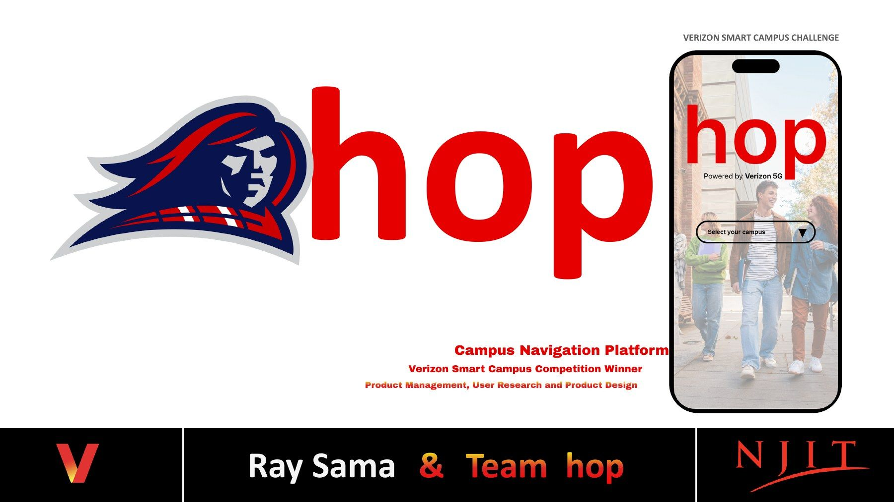
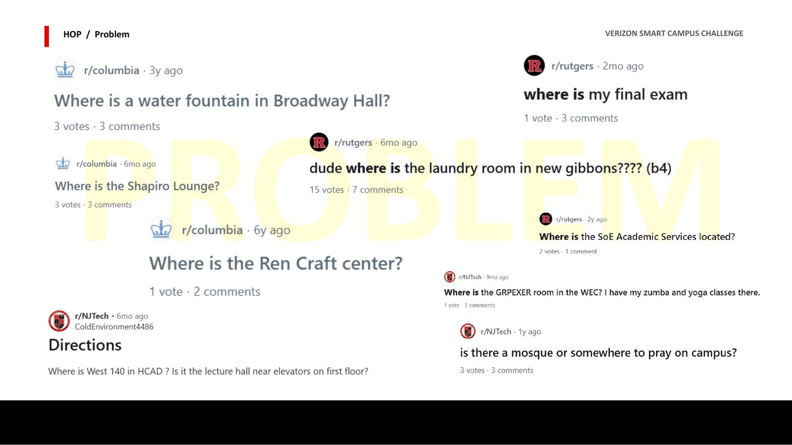
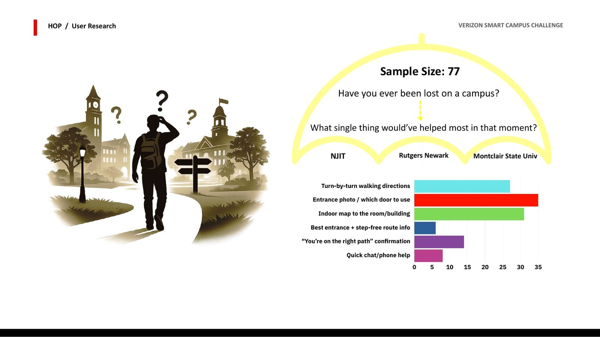
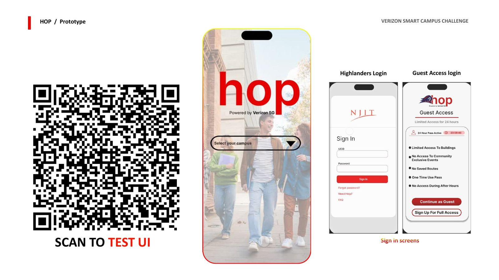
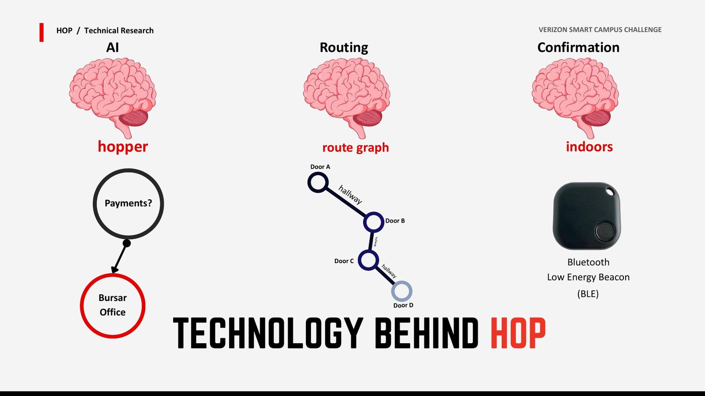
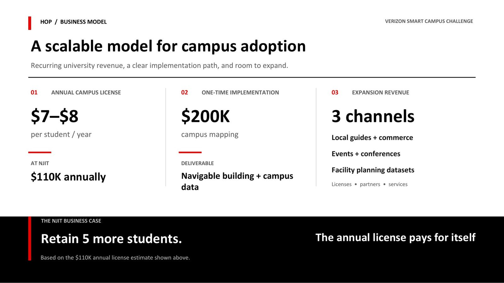
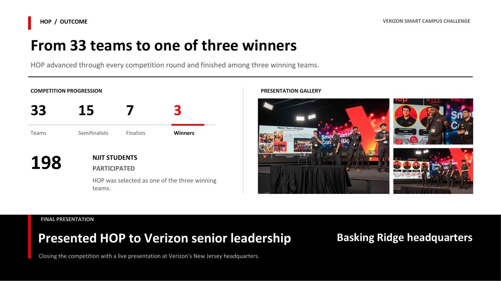
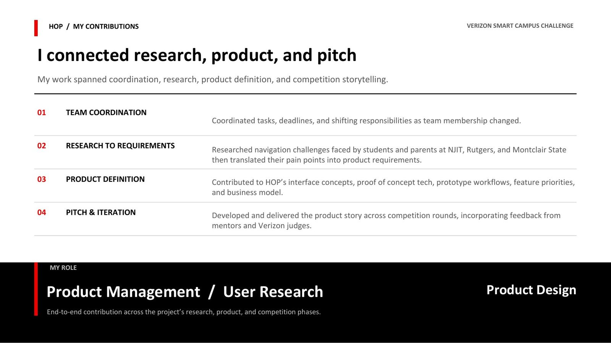

Product management · User research · Product design
HOP
Campus navigation for the last hundred feet: the right door, floor and room

- 77survey respondents
- 33 → 3teams to winners
- 198NJIT students competed
The problem
Students and visitors constantly ask where things are: a water fountain in a specific hall, a craft center, an office. Maps get people to the building. They break down at the last step: which entrance, which floor, which room.
My role
I led the team across research, product and the pitch. I coordinated tasks and deadlines as team membership changed, turned research into product requirements, and shaped the interface concepts, prototype workflows, feature priorities and business model. I also led MoSCoW prioritization on my own to scope an MVP that fit the competition timeline, and I developed and delivered the product story in every round.
Process
Ask people who have actually been lost
We surveyed 77 respondents across NJIT, Rutgers–Newark and Montclair State: “Have you ever been lost on a campus? What single thing would have helped most in that moment?” The most common answers were an entrance photo showing which door to use, an indoor map to the room, and turn-by-turn walking directions. In other words, people needed help with the final stretch.

Real questions students post about finding places on campus 
Survey of 77 respondents across three Newark-area campuses Prototype behavior, not just screens
I built HOP’s interactive UI in ProtoPie with logic-driven behavior. For example, when staff change a room, routes update instantly and a push notification goes out. The prototype included Highlander (student) login and guest access, and judges could scan a QR code to test it.

ProtoPie prototype: sign-in flows for students and guests Make the technology believable
HOP combines AI routing over an indoor route graph with on-site confirmation from Bluetooth Low Energy beacons, plus GPS, QR and NFC touchpoints. That way a user can be told they’re at the right door, not just near the right building.

Technology behind HOP: AI routing, route graph, BLE confirmation indoors Give the university a reason to buy
We proposed an annual campus license of $7–$8 per student (about $110K a year at NJIT), a one-time $200K implementation for campus mapping, and expansion revenue from local guides, events and facility-planning data. The business case was framed around retention: if HOP keeps five more students enrolled, the license pays for itself.

Business model and the NJIT business case
Outcome
HOP advanced through every round and was selected as one of three winning teams. The competition closed with a live presentation to Verizon senior leadership at its Basking Ridge, NJ headquarters.

